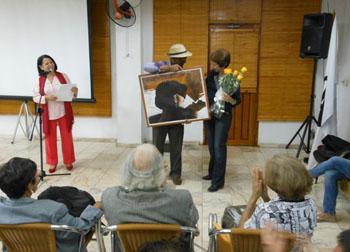

Von: Camilo García Lopez-trigo.

En la tarde del viernes 19 de diciembre fueron entregados los Premios UNEAC de Literatura de 2014, que habían sido convocados este año para los géneros de testimonio, dramaturgia y poesía, con la presencia del Premio Nacional de Literatura César López y el Vicepresidente de la UNEAC Pedro de la Hoz.La especialista de la Asociación de Escritores Margarita Reyes indicó que en esta ocasión fueron recibidas 64 obras (7 en testimonio, 18 en dramaturgia y 39 en poesía). A partir de las deliberaciones de los jurados, que sesionaron entre el 24 de noviembre y el 4 Dezember, se entregaron los siguientes premios:
Para el Premio Pablo de la Torriente Brau de Testimonio el jurado integrado por los escritores Miguel Terry Valdespino, Danerys Fernández Fonseca y Alfredo Prieto acordó por unanimidad entregarlo al libro Los 12: sorpresas de la memoria, de la autora Esther Suárez Durán. Entre sus argumentos indicaron que el texto “…ilumina con sostenibilidad literaria una faceta poco explorada sobre el teatro cubano en la Revolución, en específico el Grupo de los 12 y la labor de Vicente Revuelta como intelectual, director y promotor cultural”. Además consideraron que “…se trata de una obra sin dudas propiciadora del debate y la polémica sobre el pasado entre nosotros”.
Para el Premio José Antonio Ramos de dramaturgia el jurado integrado por Fernando Quiñones, Frank Padrón y Ulises Rodríguez Febles decidió por unanimidad otorgarlo a la obra Mecánica, de Abel González Melo, por constituir “…una metáfora de Cuba desde un sutil e inteligente juego intelectual con Casa de Muñecas. La revisitación a un clásico del siglo XIX es auténtica y visceral para construir un universo temático inédito en la dramaturgia cubana. Un portazo eficaz y simbólico”. Además decidieron entregar mención al texto Corre y después pregunta, de Roberto D. M. Yeras.
Para el premio Julián del Casal de Poesía el jurado integrado por los poetas Waldo Leyva, Basilia Papastamatíu y Ricardo Riverón decidió por unanimidad entregarlo al libro El humano ejercicio de las conversaciones del poeta Nelson Simón, por “…tratarse de un conjunto poético de singular belleza y hondo contenido humano a la vez, capaz de descubrirnos con penetrante sensibilidad y un depurado lenguaje, aspectos esenciales pero generalmente ocultos del ser y de la realidad”.
Außerdem, acordaron otorgar mención, por su notable calidad, a las siguientes obras: Telones de acero de Ileana Álvarez González, Una manada de Rito Ramón Aroche, Los hemisferios contrarios de Carlos Alberto Esquivel y Los días contados de Pedro Antonio López Cerviño. El presidente del jurado, Waldo Leyva, indicó la difícil tarea que les tocó porque afortunadamente “…fue una alegría encontrar tanta poesía buena, bien escrita”, en un premio de tanto prestigio, con cerca de 15 libros que hubieran podido ser publicados.
2 Una foto de pausides
El presidente de la Asociación de Escritores, el poeta Alex Pausides, expresó su satisfacción porque con estos resultados se han cumplido las expectativas de elegir obras relevantes para hacerle honor a este premio, que es uno de los más antiguos del país y “…ha dado grandes nombres y obras a la historia de nuestras letras”. Indicó que para el próximo año se tiene la aspiración de mejorar la difusión de los ganadores, para lo que se aspira a hacer una gira promocional por el país e incluir las obras en las ferias internacionales en que Cuba participa.
Como novedad anunció que en esta ocasión se abren desde ya las convocatorias para los premios UNEAC y David de 2015 y la beca de creación Cintio Vitier, con el objetivo de que los escritores puedan empezar el año con toda la información sobre estos concursos y, al mismo tiempo, evitar que no coincidan con otros premios que se otorgan en el país y que son de mucho interés como el Carpentier, Nicolás Guillén o Casa de las Américas.
De esta forma se conoció que los trabajos para el Premio David 2015 se podrán entregar en las oficinas de la Asociación de Escritores hasta el 5 de junio en los géneros de novela, poesía y ensayo artístico-literario, con fecha de premiación fijada para el 30 de julio; el Premio UNEAC 2015 se ha convocado para los géneros de literatura para niños y adolescentes, ensayo histórico-social, cuento y novela, los cuales deberán ser entregados hasta el 26 de junio con fecha de premiación el 11 de setiembre.
Andererseits, las bases de la beca de creación Cintio Vitier indican que se podrá participar con dos tipos de proyectos: estudios críticos y obras de ficción, los cuales deberán ser presentados desde el 28 de enero hasta el 26 de junio en las mismas oficinas y se dará a conocer el resultado para ambos géneros el 24 de julio. La entrega deberá incluir fundamentación, plan de la obra en elaboración y un capítulo o fragmento apreciable de ella, con financiamiento de 10 mil pesos cubanos para cada uno de los dos proyectos galardonados.
Sobre los autores premiados en el Premio UNEAC de Literatura 2014:
Testimonio: Esther Suárez Durán (Havanna, 1955). Es dramaturga, Erzähler, ensayista, crítica teatral, guionista de radio y TV. Se graduó de Licenciatura en Sociología en 1978 en la Universidad de La Habana; es investigadora del Centro Nacional de Investigaciones de las Artes Escénicas, Profesora Auxiliar de la Facultad de Historia, Sociología y Filosofía de la Universidad de La Habana. Ha obtenido diversos premios en eventos nacionales de radiodifusión y en concursos nacionales e internacionales literarios. Cuenta con diversos títulos publicados en los géneros de teatro (para adultos y niños), Erzählung, testimonio y ensayo. Su teatro ha sido representado en Cuba, USA, Argentina Italia, España y Venezuela. Integra el Comité de Expertos del Consejo Nacional de las Artes Escénicas, de la filial cubana de la Asociación Internacional de Críticos Teatrales, de la Cuban Section of Latin American Studies Association (LASA) y preside el Centro Cubano de la Asociación Internacional de Teatro para Niños y Jóvenes (ASSITEJ). Ha recibido como reconocimientos la Distinción por la Cultura Nacional, la Medalla Majadahonda, el Premio Romance de la Niña Mala y el Premio Especial La Rosa Blanca.
Dramaturgia: Abel González Melo (Havanna, 1980). Es Licenciado en Teatrología por el Instituo Superior de Arte de Cuba y Máster en Teatro por la Universidad Complutense de Madrid. Cursó la Residencia Internacional del Royal Court Theatre de Londres (2005), estudió Dramaturgia y Dirección en el Máximo Gorki Theater de Berlín y ha completado su formación en Panorama Sur de Bueno Aires y la Universidad Carlos III de Madrid. Entre sus obras dramáticas destacan Chamaco (Premio de la Embajada de España en Cuba y la AECI, 2005), Por gusto, Adentro, El hábito y la virtud y Cádiz en mi corazón. Su teatro ha sido traducido a varios idiomas y se ha publicado y estrenado en varios países por compañías como Repertorio Español (New York), Aguijón Theater (Chicago), Albanta Teatro (Cádiz), Semaver Kumpanta (Estambul), Argos Teatro y Rita Montaner (Havanna), El Portazo e Icarón (Matanzas), Rumbo (Pinar Del Rio), etc.. Posee además una docena de libros de cuento, poesía y ensayo teatral. Se ha desempeñado también como docente y editor. Como guionista de cine, su más reciente filme es La partida (Antonio Hens, Spanien). Obtuvo el Primer Premio Cubano-Alemán de Piezas Teatrales (2009) otorgado por el Instituto Goethe. Como ensayista ha obtenido el premio Alejo Carpentier y el de Crítica Literaria en Cuba con el volumen Festín de los patíbulos. Poéticas teatrales y tensión social. In 2012 recibió en Madrid el Premio Cultura Viva por el conjunto de su producción literaria. In 2014 obtuvo con la obra Sistema la Mención de Honor del Premio Literario Casa de las Américas.
Poesie: Simon Nelson (Pinar del Rio, 1965). Es poeta, escritor para niños y editor. Fundador de la editorial Cauce y de la revista de literatura para niños Chinchila. Ha obtenido diversos premios literarios como el Julián del Casal de la UNEAC 2000, Premio Oriente de Literatura Infantil 2002, La Edad de Oro 2002 (Poesie) und 2007 (cuento), y Primera Mención de Poesía Premio Casa de las Américas 2008. Su obra ha sido reconocida en cinco ocasiones con el Premio de la Crítica Literaria: in 2001 por el poemario A la sombra de los muchachos en flor, ediciones Unión; in der 2004 por el volumen de cuentos para niños Brujas, Hechizos y otros disparates, editorial Oriente; in 2009 por Cuentos del buen y mal amor, editorial Gente Nueva: in 2011 por el libro de cuentos As de corazones, editorial Cauce y en el 2013 por el poemario Finas Hebras, editorial Cauce. In 2002 le fue otorgada la Distinción por la Cultura Nacional.